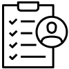
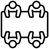
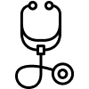
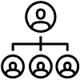
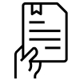
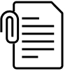

채용절차
- HOME
- 채용정보
- 채용절차
STEP1
오픈핸즈 채용
(구인) 공고
STEP2
장애인 고용공단
인재 추천
or
채용사이트 개별 지원

STEP3
서류심사 및
인적성 검사

STEP4
면접

STEP5
채용건강검진
STEP6
입사 및 OT
채용 프로세스
SETP1
오픈핸즈 채용(구인) 공고
- 오픈핸즈는 장애인 고용공단 및 채용사이트를 통해 구인공고를 진행합니다.
(장애인고용공단 : 워크투게더 / 채용사이트 : 잡코리아, 사람인, 인크루드) - 오픈핸즈는 정식 채용공고 외 이력서를 수시 접수 합니다.
SETP2
장애인 고용공단 인재 추천
or 채용사이트 개별 지원
or 채용사이트 개별 지원
- 장애인 고용공단은 워크투게더 지원자 및 구직등록 장애인 중
적합한 인재의 이력서를 오픈핸즈에 제공합니다. - 채용사이트 개별 지원자는 오픈핸즈에서 직접 접수합니다.
SETP3
서류심사 및
인적성 검사
인적성 검사
- 서류심사는 지원자의 이력서를 바탕으로 직무 적합성,
유관 자격 및 이력을 중심으로 평가합니다. - 서류 합격자는 공인된 기관을 통해 인적성 검사를 실시하여
직무 및 조직적합성을 검증합니다.
(직무에 따라 인적성 검사는 생략하기도 합니다)
SETP4
면접
- 인적성 응시자는 면접을 통해 오픈핸즈 인재상,
직무적합도 및 조직적응력 등 종합평가를 실시합니다.
SETP5
채용건강검진
- 면접 합격자는 채용건강검진을 통해 근무할수 있는 건강상태인지 검증합니다.
SETP6
채용여부 결정
- 채용건강검진에서 적합으로 판정되면 입사 후 OT를 진행합니다.
구직 장애인
STEP1
구직장애인
이력서 작성
이력서 작성
STEP2
해당지역 공단방문
(직업상담 및 구직등록)
(직업상담 및 구직등록)

STEP3
등록된 구직 · 인력
정보 종합관리
정보 종합관리

STEP4
워크투게더 채용공고에
이력서 접수
이력서 접수
STEP5
지원자 이력서 및 등록된
구직자중 대상자 선발,추천
구직자중 대상자 선발,추천
STEP6
오픈핸즈
채용 절차에 따라 진행
채용 절차에 따라 진행
구직 비장애인

STEP1
구직정보 인터넷 사이트 등록
* 잡코리아, 사람인, 인크루트
STEP2
오픈핸즈 채용공고에
지원 및 이력서 제출 * 오픈핸즈 홈페이지에서
채용정보 확인 및 지원 가능
지원 및 이력서 제출 * 오픈핸즈 홈페이지에서
채용정보 확인 및 지원 가능
STEP3
오픈핸즈의
채용 절차에 따라 진행
채용 절차에 따라 진행
-
오픈핸즈 연락처 02-6155-6444
※ 수시 이력서 접수한 경우 오픈핸즈 채용담당자에게 지원정보가 접수되며,
T/O 발생시 지원자에게 오픈핸즈에서 직접 연락합니다. -
장애인 고용공단 취업지원부 연락처
서울 동부지사 02-2146-3574 경기 동부지사 031-600-0287
오픈핸즈 홈페이지
웹접근성 품질 인증 마크 인증
웹접근성 품질 인증 마크 인증
장애인을 비롯한 모든 이용자들의 웹접근성을 높이기 위해 방송통신위원회의 한국형 웹콘텐츠 웹접근성 지침 2.1을 준수하였습니다.

- 01. 이미지를 인식하기 어렵거나 웹 접속 환경이 불안정한 이용자를 위해, 모든 이미지에 대체 텍스트를 삽입하였습니다.
- 02. 마우스 사용이 불편한 장애이들을 위해, 키보드만으로 홈페이지 이용이 가능합니다.
- 03.시각장애인용 ‘스크린리더기’가 원활하게 작동할 수 있도록,홈페이지에 플래시를 사용하지 않았습니다.

- 04. 홈페이지 이용을 보조하는 소프트웨어를 사용하는 이용자를 위해, 콘텐츠의 자동실행을 제한하였습니다.